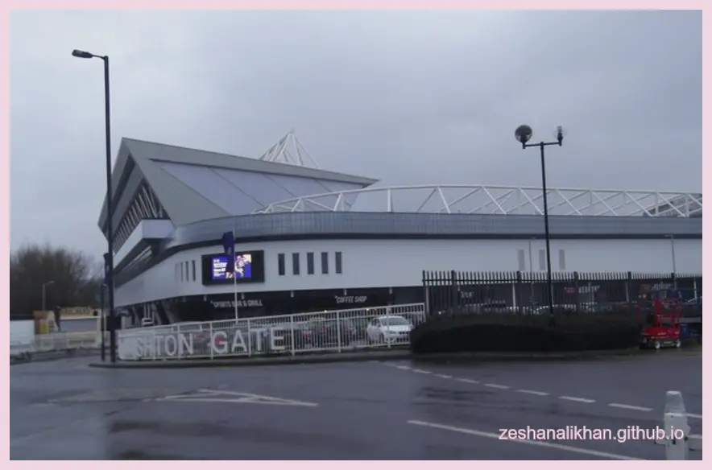

Kickoff time
The match is listed for 7:45 PM BST on Friday, April 17. US readers can use 2:45 PM ET and 11:45 AM PT.
Bristol Bears host Gloucester Rugby at Ashton Gate on Friday, April 17, 2026. The listed kickoff is 7:45 PM BST, which is 2:45 PM ET and 11:45 AM PT for US readers. The useful angle is simple: Bristol are sitting in the playoff chase, Gloucester are trying to make a messy season feel dangerous again, and this rivalry has produced a lot of points lately.
I picked this match because it has more search intent than a normal fixture listing. People will look for the kickoff time, the Ashton Gate venue, the table position, and whether Gloucester can make the trip uncomfortable for a Bristol side still chasing the higher end of the PREM table.
The official PREM standings page at research time listed Bristol 5th with 38 points from 12 matches. Gloucester were listed 8th with 16 points from 12 matches. That table gap matters, but it does not make the game flat. The last five meetings have all carried real scoring weight, including Bristol winning 49-34 at Kingsholm in October 2025.

The match is listed for 7:45 PM BST on Friday, April 17. US readers can use 2:45 PM ET and 11:45 AM PT.
Bristol are in the stronger position, sitting 5th with 38 points in the official PREM table used for this page.
The last five meetings include scorelines of 49-34, 53-28, 44-41, 33-24, and 51-26, so the recent trend is not low-event rugby.
The live page uses our own local data file for score, status, and short notes. It keeps the match-window view clean, simple, and focused on this fixture.